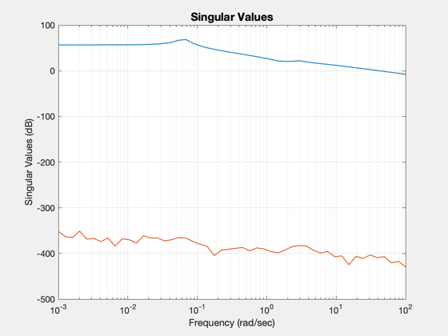
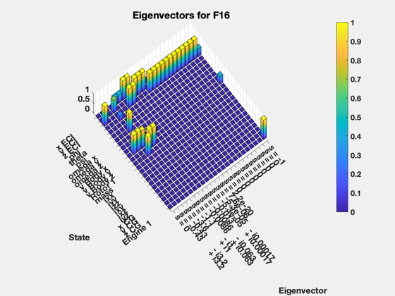

Trim an F16
------------------------------------------------------------------------
See also AlphBeta, ECIToNED, VBDToVBT, VTToVB, DefaultACData, AC,
ACInit, ACTrim, ACEngEq, @acstate/acstate.m, EigEval, SVPlot, Eul2Q,
Q2Eul, QMult, QPose, Mag
------------------------------------------------------------------------
Contents
clear g
F16 database
d = DefaultACData;
Initial state vector
alphaStart = 0.03691;
betaStart = -4e-9;
vT = 502;
v = VTToVB( vT, alphaStart, betaStart );
cG = [0.35;0;0];
r = [2.092565616797901e+07;0;0];
eulInit = [0;0.03691;0];
qNEDToB = Eul2Q(eulInit);
qECIToNED = ECIToNED( r, 'quaternion' );
q = QMult( qECIToNED, qNEDToB );
w = [0;0;0];
wR = 160;
engine = 0;
mass = 1/1.57e-3;
inertia = [9497;55814;63100;0;-982;0];
actuator = [];
sensor = [];
flex = [];
disturb = [];
Constraint
g = struct;
g.vT = 502;
Control
d.control.throttle = 0.1385;
d.control.elevator = -0.7588;
d.control.aileron = -1.2e-7;
d.control.rudder = 6.2e-7;
start = struct;
start.control = d.control;
engine = ACEngEq( d, v, r );
Initialize the model
x = acstate( r, q, w, v, wR, mass, inertia, cG, engine, actuator, sensor, flex, disturb );
d = ACInit( x, d );
Find the initial acceleration vector
xDot = AC( x, 0, 0, d, 'xdot' );
Compute alpha and beta and their rates
v = get( x, 'v' );
vDot = get( xDot, 'v' );
wDot = get( xDot, 'w' );
vTDot = VBDToVBT( v, vDot );
[alpha, beta, alphaDot, betaDot] = AlphBeta( v, vDot );
fprintf('Magnitude of vDot (guess): %f',Mag(vDot))
xDotStart = [vTDot;alphaDot;betaDot;wDot];
engStart = get(x, 'engine');
engDotStart = get(xDot,'engine');
Magnitude of vDot (guess): 0.065625
Trim the model
w = ones(1,11);
w(1) = 1/100;
[x, d, cost] = ACTrim( x, d, w, g );
ds = d;
v = get( x, 'v' );
w = get( x, 'w' );
vT = Mag(v);
qECIToB = get( x, 'q' );
qECIToNED = ECIToNED( get( x, 'r' ), 'quaternion' );
qNEDToB = QMult( QPose(qECIToNED), get( x, 'q' ) );
eul = Q2Eul( qNEDToB, [0;0;0] );
Find the final acceleration vector
xDot = AC( x, 0, 0, d, 'xdot' );
fprintf('Magnitude of vDot (after ACTrim): %f\n',Mag(get(xDot,'v')))
fprintf('\nCONTROLS:\n')
fprintf('\tthrottle: %f\n',d.control.throttle)
fprintf('\televator: %f\n',d.control.elevator)
fprintf('\t aileron: %f\n',d.control.aileron)
fprintf('\t rudder: %f\n\n',d.control.rudder)
Magnitude of vDot (after ACTrim): 0.000535
CONTROLS:
throttle: 0.143683
elevator: -1.468505
aileron: -0.000000
rudder: 0.000001
Compute alpha and beta and their rates
v = get( x, 'v' );
vDot = get( xDot, 'v' );
wDot = get( xDot, 'w' );
vTDot = VBDToVBT( v, vDot );
[alpha, beta, alphaDot, betaDot] = AlphBeta( v, vDot );
xDotFinish = [vTDot;alphaDot;betaDot;wDot];
engFinish = get(x, 'engine');
engDotFinish = get(xDot,'engine');
fprintf('Trim Results\n');
fprintf(' Initial Final\n');
fprintf('Cost %12.4e %12.4e\n',cost.start,cost.end);
fprintf('Engine %12.4f %12.4f\n',engStart,engFinish);
fprintf('Throttle %12.4f %12.4f\n',start.control.throttle,d.control.throttle);
fprintf('Elevator %12.4f %12.4f\n',start.control.elevator,d.control.elevator);
fprintf('Aileron %12.4e %12.4e\n',start.control.aileron, d.control.aileron);
fprintf('Rudder %12.4e %12.4e\n',start.control.rudder, d.control.rudder);
fprintf('Phi %12.4f %12.4f\n',eulInit(1), eul(1));
fprintf('Theta %12.4f %12.4f\n',eulInit(2), eul(2));
fprintf('Psi %12.4f %12.4f\n',eulInit(3), eul(3));
fprintf('alpha %12.4f %12.4f\n',alphaStart, alpha);
fprintf('beta %12.4f %12.4f\n',betaStart, beta);
fprintf('vTDot %12.4e %12.4e\n',xDotStart(1), xDotFinish(1));
fprintf('alphaDot %12.4e %12.4e\n',xDotStart(2), xDotFinish(2));
fprintf('betaDot %12.4e %12.4e\n',xDotStart(3), xDotFinish(3));
fprintf('wXDot %12.4e %12.4e\n',xDotStart(4), xDotFinish(4));
fprintf('wYDot %12.4e %12.4e\n',xDotStart(5), xDotFinish(5));
fprintf('wZDot %12.4e %12.4e\n',xDotStart(6), xDotFinish(6));
fprintf('EngineDot %12.4f %12.4f\n',engDotStart, engDotFinish);
Trim Results
Initial Final
Cost 1.6573e-02 1.1839e-06
Engine 8.9942 9.3308
Throttle 0.1385 0.1437
Elevator -0.7588 -1.4685
Aileron -1.2000e-07 -2.2923e-07
Rudder 6.2000e-07 5.4535e-07
Phi 0.0000 0.0003
Theta 0.0369 0.0374
Psi 0.0000 -0.0098
alpha 0.0369 0.0374
beta -0.0000 -0.0000
vTDot -3.1087e-03 4.8571e-04
alphaDot -1.3058e-04 4.4624e-07
betaDot 1.8022e-09 -2.3773e-08
wXDot 2.9170e-07 1.6995e-06
wYDot -1.2857e-01 -1.0727e-05
wZDot -7.1999e-08 -1.3721e-05
EngineDot 0.0000 0.0000
Linearize the model
g = AC( x, 0, 0, d, 'lin');
a = get( g, 'a' );
b = get( g, 'b' );
c = get( g, 'c' );
d = get( g, 'd' );
k = 4:12;
fprintf('---------------------------\nThe linearized model\n\n')
a = a(k,k);
b = b(k,:);
c = c(:,k);
fprintf('\nThe A matrix\n\n')
fprintf('%8.2g %8.2g %8.2g %8.2g %8.2g %8.2g %8.2g %8.2g %8.2g\n\n',a);
fprintf('\nThe B matrix\n\n')
fprintf('%8.2g %8.2g %8.2g %8.2g\n\n',b);
fprintf('\nThe C matrix\n\n')
fprintf('%8.2g %8.2g %8.2g %8.2g %8.2g %8.2g %8.2g %8.2g %8.2g\n\n',c);
fprintf('\nThe D matrix\n\n')
fprintf('%8.2g %8.2g %8.2g %8.2g\n\n',d);
dmat = d;
d = ds;
---------------------------
The linearized model
The A matrix
-4.1e-05 -2.2e-05 -0.0011 0 -7.3e-11 0 0 32 -0.011
2.2e-05 0 8.2e-07 4.8e-15 7.3e-11 7.6e-14 -32 -0.00041 -1.2
0 0 0 0 -2.2e-10 0 2.6e-07 0 1.3e-07
1 0 0 -3.7 2.1e-05 -0.024 0 19 2.7e-06
1.3e-05 1 0.00034 0.00025 -1.3 0.0025 -18 -0.00089 4.5e+02
0.037 -0.00034 1 0.64 -0.0029 -0.48 1.3e-05 -5e+02 -0.001
0 0 0 -4.1e-09 8.9e-05 -2.2e-08 -0.017 -2.2e-05 -0.089
0 0 0 -0.061 -3.5e-12 0.018 2.2e-05 -0.33 -3.5e-06
0 0 0 2.3e-07 -0.0025 -9.9e-09 0.056 3.8e-06 -1
The B matrix
0 0 0 0
0 0 0 0
0 0 0 0
0 -0.18 0 0.21
0 -1.1 0 0
0 -0.73 0 -0.032
0 0.16 0 0
0 0 0.13 0
-0.064 0 0.43 0
-0 -0 -0 4.1e-09
-8.9e-05 2.2e-08 0.017 2.2e-05
0.089 -0 -0 -0
0.061 -1.7e-10 -0.018 -2.2e-05
0.33 3.5e-06 -0 -0
-0 -2.3e-07 0.0025 9.9e-09
-0.056 -3.8e-06 1
The C matrix
0 0 0 0 0 0 0 0 0
0 0 0 0 0 0 0 0 0
0 0 0 0 0 0 0 57 0
0 0 0 0 0 1.5 0 57 0
0 0 0 0 0 0 0 57 0
0 0 0 0.0027 0 0 0 -0.0043 0
0.0009 1.2 0 0 0 0 0 0 0
0 0.032 0 0 0 0.11 0 3.3e-05 0.045
The D matrix
0 0 0 0
0 0 0 0
0.033 0 0 0
0 0 0 0
0 0 0 0
0 0 0 0
0 0 0 0
0 0 0 0
0 0 0 0
0 0 0 0
0 0 0 0
0 0 0 0
0 0 0 0
0 0 0 0
Analysis functions
SVPlot(g,logspace(-3,2));
EigEval(g);
 